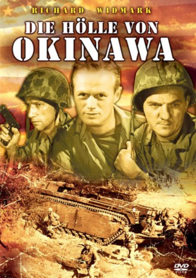

#4266 Die Hölle von Okinawa
Alternativ: Halls of Montezuma
 
 IMDB-Wertung: 6.7 / 10
IMDB-Wertung: 6.7 / 10  Metascore: 0
Metascore: 0 
Hart und schonungslos zeigt dieser Film ein realistisches Bild des erbarmungslosen Krieges im Pazifik. Um jede einzelne Insel wird erbittert gekämpft, kein Meter Boden wird freiwillig aufgegeben. Das "Inselspringen" wird zur gnadenlosen und menschenverschlingenden Taktik. Für die Vorherrschaft in dieser Region ist beiden Seiten kein Opfer zu groß, und der Sturm auf die Insel Okinawa muß mit Soldaten und Material teuer bezahlt werden...
Jahr: 1951
Dauer: 113 Minuten
FSK: 12
Land: USA Studio: Twentieth Century-Fox Film CorporationTonspuren:
Untertitel:
Auflösung: 1080p (1440x1080) Größe: 8140 MB
Genre: Action, Abenteuer, Drama, Krieg
Regisseur: Lewis Milestone
Drehbuch: Sean Macaulay
Soundtrack:
Darsteller:
 Richard Widmark als Lt. Anderson
Richard Widmark als Lt. Anderson Jack Palance als Pigeon Lane
Jack Palance als Pigeon Lane Reginald Gardiner als Sgt. Johnson
Reginald Gardiner als Sgt. Johnson Robert Wagner als Coffman
Robert Wagner als Coffman Karl Malden als Doc
Karl Malden als Doc- Richard Hylton als Conroy
 Richard Boone als Lt. Col. Gilfillan
Richard Boone als Lt. Col. Gilfillan Skip Homeier als Pretty Boy
Skip Homeier als Pretty Boy- Jack Webb als Correspondent Dickerman
 Bert Freed als Slattery
Bert Freed als Slattery Neville Brand als Sgt. Zelenko
Neville Brand als Sgt. Zelenko Martin Milner als Whitney
Martin Milner als Whitney Edward Binns als First Soldier in Final Tracking Shot , uncredited
Edward Binns als First Soldier in Final Tracking Shot , uncredited- Jerry Fujikawa als Japanese Soldier , uncredited
 Don Gordon als Marine , uncredited
Don Gordon als Marine , uncredited Joe Turkel als Marine , uncredited
Joe Turkel als Marine , uncredited- Don Hicks als Lt. Butterfield
- Philip Ahn als Nomura
- Richard Allan als Pvt. Stewart , uncredited
- Robert Board als Marine , uncredited
- Robert Bohannon als Soldier , uncredited
- Michael Capanna als Marine , uncredited
 Harry Carter als Bosun's Mate , uncredited
Harry Carter als Bosun's Mate , uncredited- Shirley Christensen als Minor Role , uncredited
- Howard Chuman als Capt. Ishio Makino , uncredited
- John Close als Marine , uncredited
- Fred Coby als Capt. McCreavy , uncredited
- Pat Combs als Marine , uncredited
- George Conrad als Corpsman , uncredited
- Fred Dale als Pharmacist's Mate , uncredited
- Chris Drake als Frank , uncredited
- Helene Hatch als Aunt Emma , uncredited
- William Hawes als Pascowicz , uncredited
- Buster Hobbs als Minor Role , uncredited
- Frank Iwanaga als Japanese Soldier , uncredited
- Frank Kumagai als Romeo , uncredited
- Charles Lee als Japanese Soldier , uncredited
- Jack Lee als Courier , uncredited
- Paul Lees als Capt. Seaman , uncredited
- Bob MacLean als Marine Guard , uncredited
- Benito Marcus als Minor Role , uncredited
- Juan Marcus als Minor Role , uncredited
- Marion Marshall als Nurse , uncredited
- Harris Matsushige als Japanese Soldier , uncredited
- Roger McGee als Davis , uncredited
- John McKee als Marine , uncredited
- Harry McKim als Radioman , uncredited
- Rollin Moriyama als Fukado , uncredited
- Ralph Nagai als Willie , uncredited
- Al Negbo als Marine , uncredited
Datei: X:\1950-1959\Hölle von Okinawa, Die (1951, FSK12, 1440x1080).mkv seit 30.08.2016
Festplatte: HD 1900-1970
 Es gibt insgesamt 141 Filme in der Gruppe '1950-1959'
Es gibt insgesamt 141 Filme in der Gruppe '1950-1959'